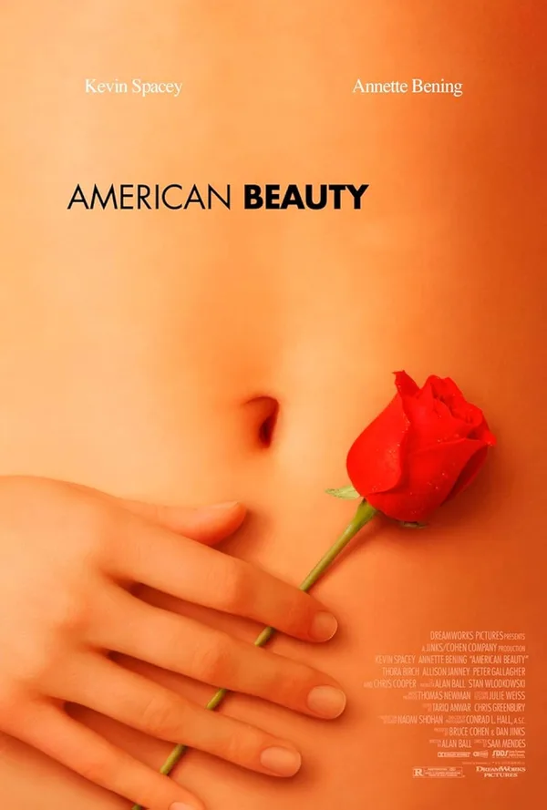
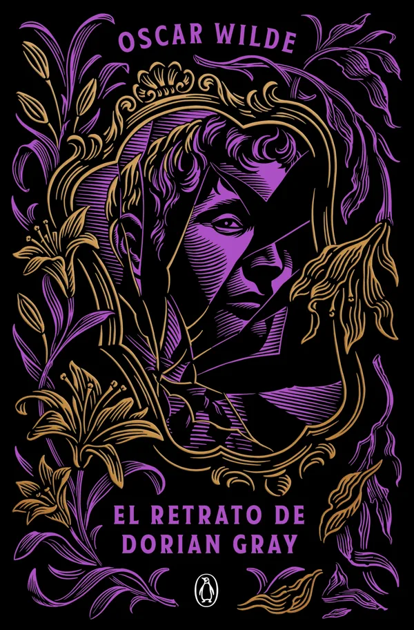
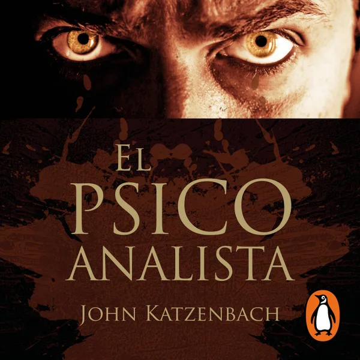

rinconcito oscuro de internet presenta
VANZY
en vivo desde mi pieza · actualizado 17.11.2026 · uwu
EN EL TOP:
- Fall Out Boy
- Paramore
- Turnstile (una es falsa es fake)
- escuchando
- Faster — Manic Street Preachers
- toco
- bajo • guitarra • batería
- signo
- acuario
- vicio
- Soul Reaver siempre
Holaaaa~ ♡ Si llegaste hasta aquí, quédate un ratito. Aquí están mis bandas, mis pelis, mis libros y uno que otro pensamiento perdido. UwU
firma el guestbook →


